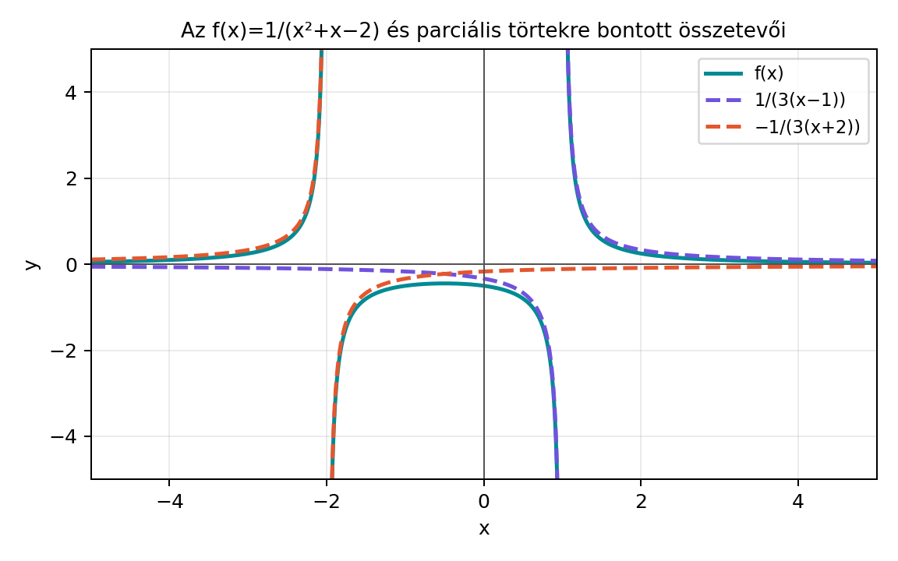

14.4 Racionális törtfüggvények és
trigonometrikus helyettesítések
14.4.1 Motiváció
Az eddigi integrálási technikák – helyettesítés és parciális
integrálás – sok függvényre elegendőek, de két nagy függvényosztály, a
racionális törtfüggvények és a gyökös kifejezések, módszeres eljárást
igényel. Racionális törtfüggvényekkel találkozunk például kémiai
reakciókinetikában, ahol a másodrendű reakció sebességi egyenlete
alakú, és az
koncentráció meghatározásához a
integrált kell kiszámítanunk. A gyökös kifejezések közül a
például a kör egyenletéből adódik: az
sugarú kör felső félkörének egyenlete
,
így a kör területének kiszámítása a
integrálra vezet. Ebben az alfejezetben mindkét problémakört
szisztematikusan megoldjuk.
14.4.2 Szemléletes kép
A parciális törtekre bontás lényege, hogy egy bonyolult racionális
függvényt egyszerűbb, már integrálható elemi törtek összegére bontunk.
Az alábbi ábra az
függvényt és annak
felbontását mutatja.

Az f(x)=1/(x²+x−2) és parciális törtekre
bontott összetevői - A folytonos vonal az f függvény, a szaggatott
vonalak az 1/(3(x−1)) és a −1/(3(x+2)) összetevők. Az x=1 és x=−2
függőleges aszimptoták; a parciális törtekre bontás lokálisan, az
aszimptoták közelében is jól látható.
Látható, hogy a függőleges aszimptoták az
és
helyeken vannak, és a két összetevő külön-külön is ugyanazokkal az
aszimptotákkal rendelkezik. A felbontás tehát nem változtatja meg a
szingularitásokat, csak szétválasztja őket.
14.4.3 Definíciók és a parciális
törtekre bontás tétele
Definíció. Racionális törtfüggvénynek nevezzük
az
alakú függvényeket, ahol
és
valós együtthatós polinomok, és
nem az azonosan nulla polinom. Ha
,
akkor valódi racionális törtfüggvényről beszélünk; ha
,
akkor polinomosztással egy polinom és egy valódi racionális törtfüggvény
összegére bonthatjuk.
Tétel (parciális törtekre bontás). Legyen
valódi racionális törtfüggvény, ahol
valós együtthatós polinom. Írjuk fel
-t
valós tényezős felbontásban:
ahol
a valós gyökök,
pedig negatív diszkriminánsú, irreducibilis másodfokú tényezők
().
Ekkor
egyértelműen felírható
alakban, ahol
,
,
valós konstansok.
Bizonyítási vázlat. A teljes bizonyítás algebrai
jellegű; a fő lépéseket mutatjuk be. Először polinomosztással elérjük,
hogy a tört valódi legyen, ezután a nevezőt a fenti alakra
faktorizáljuk. Az ismeretlen konstansokat közös nevezőre hozás után a
számlálók összehasonlításával határozzuk meg; ez egy lineáris
egyenletrendszerre vezet. A rendszer mátrixa a gyökök különbözősége
miatt nemszinguláris, így a megoldás egyértelmű. A valós tényezős
felbontás létezését a Komplex számok a gyakorlatban:
forgatás, fázorok és polinomok gyökei alfejezetben igazoltuk: a nem
valós gyökök konjugált párokban jelennek meg, és a konjugált lineáris
tényezők szorzata negatív diszkriminánsú másodfokú tényezőt ad. ∎
Polinomosztás: ha
,
osszuk el
-t
-val,
hogy
legyen, ahol
.
A polinom
integrálja közvetlen.
A nevező valós tényezős felbontása: keressük meg
valós gyökeit, és a nem valós gyökpárokból alkossuk meg az irreducibilis
másodfokú tényezőket.
Parciális törtekre bontás: írjuk fel az ismeretlen
konstansokkal a tételbeli alakot, hozzunk közös nevezőre, és a számlálók
együtthatóinak összehasonlításával oldjuk meg a lineáris
egyenletrendszert. Egyszeres valós gyököknél a letakarási
módszer is használható: ha
és
,
akkor az
tag együtthatója
.
Integráljuk az elemi törteket a fenti
képletekkel.
Ellenőrizzük a végeredményt deriválással.
14.4.6 Kidolgozott példák
1. példa (egyszeres valós gyökök). Számítsuk ki
az
integrált.
A nevezőt szorzattá alakítjuk:
.
A tört valódi, így
Közös nevezőre hozva:
Helyettesítsünk
-et:
,
így
.
Helyettesítsünk
-t:
,
így
.
Tehát
Ellenőrzés deriválással:
∎
2. példa (másodfokú irreducibilis tényező).
Integráljuk az
függvényt.
A nevező felbontása:
,
ahol
diszkriminánsa negatív. A parciális törtek alakja:
Közös nevezőre hozva:
Az együtthatók összehasonlításából:
,
,
,
tehát
.
Így
Az első tag
,
a második
,
a harmadik
.
Végeredmény:
Ellenőrzés deriválással:
∎
14.4.7 Trigonometrikus
helyettesítések
Gyakran találkozunk
,
vagy
alakú kifejezésekkel. Az ötlet az, hogy egy alkalmas trigonometrikus
helyettesítéssel a gyök alatti kifejezést négyzetösszeggé vagy
négyzetkülönbséggé alakítjuk, amelyet a
azonosság segítségével egyszerűsítünk.
esetén válasszuk az
helyettesítést, ahol
.
Ekkor
és
.
esetén válasszuk az
helyettesítést, ahol
.
Ekkor
és
.
esetén válasszuk az
helyettesítést, ahol
.
Ekkor
és
.
A visszahelyettesítésnél a
szög összes szögfüggvényét egy derékszögű referencia-háromszögből
olvashatjuk le: a helyettesítés két oldalt rögzít, a harmadik oldal a
Pitagorasz-tételből adódik, és éppen ez a gyökös kifejezés (lásd az
alábbi ábrát).
Statikus változat (mint a PDF-ben)
Referencia-háromszögek a trigonometrikus helyettesítésekhez;
a gyökös kifejezés a vastag oldal. Alul: az egységkör felső fele,
vetülettel és
magassággal
Levezetés:
és a kör területe. Az
helyettesítéssel, ahol
,
,
és
(itt
).
Így
A
azonosságot használva:
Visszahelyettesítve
és
,
kapjuk:
Az
sugarú kör területét a felső félkör területének kétszerese adja. Mivel
a
intervallumon, az
helyettesítéssel (most
):
Ez a klasszikus körterület-képlet levezetése integrálással.
Levezetés:
.
Az
helyettesítéssel
,
,
és
(mivel
).
Így
Ez utóbbit parciális integrálással számítjuk ki (lásd Parciális integrálás). Legyen
és
,
ekkor
,
.
Így
Mivel
,
a jobb oldali integrál:
Jelölje
.
Ekkor
ahonnan
(Az
integrált így kapjuk:
;
az
helyettesítéssel és parciális törtekkel
.)
Visszaírva
és
:
Ha a integrálandó függvény
és
racionális törtfüggvénye, akkor a
helyettesítés mindig racionális törtfüggvényre vezet
-ben.
Fennállnak a következő azonosságok:
Ezeket levezethetjük a félszög-képletekből:
,
és
.
Példa. Számítsuk ki az
integrált. A helyettesítéssel:
így
Ellenőrzés deriválással:
∎
Megjegyzés. Az univerzális helyettesítés mindig
működik, de gyakran nagyobb racionális törteket eredményez, mint egy
célzott speciális helyettesítés (például ha az integrál csak
-et
tartalmaz, érdemes a
azonosságot használni). Ezért először mindig vizsgáljuk meg, van-e
egyszerűbb út.
14.4.9 Mikor adjuk fel: nem elemi
integrálok
Nem minden elemi függvénynek van elemi primitív függvénye. Liouville
tétele szerint például az
,
a
és az
függvények primitív függvénye nem fejezhető ki véges sok elemi
függvénnyel. Ilyenkor speciális függvényeket (például az
hibafüggvényt, a
integrálszinust vagy a
logaritmikus integrált) vezetnek be, vagy numerikus integrálást
alkalmazunk, amellyel a Numerikus integrálás:
téglalap-, trapéz- és Simpson-szabály alfejezet foglalkozik. A SymPy
nem elemi esetben gyakran speciális függvénnyel felel (pl.
integrate(exp(-x**2), x) → sqrt(pi)*erf(x)/2);
ha ilyet sem talál, numerikus közelítés kell.
14.4.10 Valós életbeli alkalmazás:
másodrendű kémiai reakció
Tekintsük az
másodrendű reakciót, amelyben az
és
anyagok kezdeti koncentrációja
és
(mol/L), a
termék koncentrációja
(mol/L), a reakciósebességi állandó pedig
(L/(mol·s)). A reakciósebesség-egyenlet:
A változókat szétválasztva:
Feltesszük, hogy
.
A bal oldalt parciális törtekre bontjuk:
Valóban, közös nevezőre hozva:
.
Így
A
-nál
kezdeti feltételből
.
Tehát
Ebből az exponenciális függvény segítségével
kifejezhető. Legyen
;
ekkor
Konkrét számokkal. Legyen
mol/L,
mol/L,
L/(mol·s), és kérdezzük a termék koncentrációját
s múlva. Ekkor
mol/L,
,
így
.
Behelyettesítve:
Tehát 60 másodperc alatt körülbelül
mol/L termék képződik. A modell feltételezi a tökéletes keveredést,
állandó hőmérsékletet és a mellékreakciók hiányát; ezek sérülése esetén
a valós koncentráció eltérhet.
14.4.11 Python-illusztráció
A SymPy segítségével ellenőrizhetjük a parciális törtekre bontást és
a trigonometrikus helyettesítés eredményét. A kód szemléltetés, nem
bizonyítás – a szimbolikus számítás ugyanazokat az algebrai
azonosságokat használja, mint a kézi levezetés.
import sympy as spx, t = sp.symbols('x t', real=True)# Parciális törtekre bontásf =1/(x**2+ x -2)print("parciális törtek:", sp.apart(f, x))print("integrál:", sp.integrate(f, x))# Trigonometrikus helyettesítés eredményeg = sp.sqrt(1- x**2)print("∫√(1-x²) dx =", sp.integrate(g, x))# Másodrendű reakció: numerikus érték a zárt képletbőla, b, k =0.1, 0.15, 0.02M = sp.exp(k*(b-a)*60)x_num = a*b*(M-1)/(b*M-a)print("x(60 s) ≈", x_num.evalf(), "mol/L")
A kimenet SymPy 1.14.0-val futott. A SymPy log jelölése
a természetes alapú logaritmust, asin pedig az
függvényt jelöli; a logaritmusban az abszolút értéket nem írja ki. Az
eredmények egyeznek a kézi számolással; a numerikus érték a 0,0156 mol/L
közelítéssel konzisztens.
14.4.12 Tipikus hibák
A polinomosztás elhagyása. Ha a számláló
fokszáma nem kisebb a nevezőénél, akkor a parciális törtekre bontás
előtt polinomosztást kell végezni. Ellenkező esetben a felírt alak nem
lesz helyes, például
-nél
az
alak nem lehetséges.
Hiányos parciális törtek többszörös gyököknél.
Ha a nevezőben
szerepel, akkor nem csak
,
hanem
alakot kell felírni. Például
helyes felbontása
,
ahol
,
.
A trigonometrikus helyettesítésnél a
elhagyása vagy a határok elrontása. Határozott integrálnál a
helyettesítés során a határokat is át kell számítani, vagy a
visszahelyettesítés után az eredeti határokkal kell számolni. A
jellegű összefüggést soha nem szabad elfelejteni.
Az univerzális helyettesítésnél a
kihagyása. Ha csak a
és
képleteket helyettesítjük be, de a
-et
nem, az integrál nem lesz helyes.
Az
típusú integrál
-val
való osztásának elhagyása. A helyes eredmény
,
és sokan elfelejtik az
tényezőt.
14.4.13 Önellenőrzés
Igaz-e, hogy minden racionális törtfüggvény integrálható elemi
függvényekkel?
Bontsd parciális törtekre az
függvényt, és add meg az integrálját.
Milyen trigonometrikus helyettesítést választanál az
integrálhoz?
Mi az univerzális helyettesítésnél a
és a
képlete
esetén?
Igaz-e, hogy az
integrál kiszámításához feltétlenül univerzális helyettesítés
szükséges?
14.4.14 Feladatok
1. feladat (A). Bontsd parciális törtekre és
integráld:
4. feladat (B). Az univerzális helyettesítéssel
()
számítsd ki:
5. feladat (C). Bizonyítsd be, hogy ha az
-edfokú
polinomnak
különböző valós gyöke van
(),
akkor az
alakú felbontás egyértelmű. (Útmutatás: tételezd fel két különböző
felbontást, vond ki őket, szorozz a közös nevezővel, és használd, hogy
egy legfeljebb
-edfokú
polinomnak legfeljebb
gyöke lehet.)
6. feladat (D). Egy másodrendű reakcióban
.
A kezdeti koncentrációk:
mol/L,
mol/L, a sebességi állandó
L/(mol·s). Határozd meg a
termék koncentrációját
s elteltével a levezetett
képlet segítségével, ahol
.
Értelmezd az eredményt, és vizsgáld meg, mi történik nagyon nagy
esetén.
14.4.15 Megoldások
Önellenőrzés – válaszok
Igen: a polinomosztás és a parciális törtekre bontás után minden tag
elemi módon integrálható, így minden racionális törtfüggvénynek van
elemi primitívje.
,
integrálja:
.
,
.
,
.
Nem feltétlenül; például
átalakítással is integrálható, de az univerzális helyettesítés is
működik.
1. feladat (A).
,
tehát
.
Közös nevezőre hozva
.
:
,
.
:
,
.
Így
.
Ellenőrzés deriválással.
2. feladat (A). Helyettesítés:
,
,
.
Így
.
3. feladat (B). Nevező:
.
Felbontás:
.
Közös nevező:
.
Összehasonlítás:
,
,
,
tehát
.
Az integrál:
.
Ellenőrzés deriválással.
4. feladat (B).
,
,
.
Az integrandusz:
.
Így
.
Ellenőrzés deriválással.
5. feladat (C). Tegyük fel, hogy
minden
esetén. Kivonva:
.
Szorozzuk meg
-vel:
a
legfeljebb
-edfokú
polinom minden
helyen nulla, tehát végtelen sok gyöke van, így azonosan nulla.
Helyettesítsünk
-t:
minden
tagban szerepel az
tényező, ezért
.
A gyökök különbözők, így a szorzat nem nulla, tehát
minden
-re.
∎
6. feladat (D). Adott
,
,
,
s. Ekkor
,
,
.
Képlet:
.
A nevező:
,
a számláló:
,
így
mol/L. Tehát 120 s alatt körülbelül
mol/L termék képződik. Nagy
esetén
,
ezért
,
tehát a termékkoncentráció a kisebbik kezdeti koncentrációhoz,
-hoz
tart, ami azt jelenti, hogy a feleslegben lévő
anyagból nem fogy el mind, hanem a korlátozó reagens
teljesen elreagál.
14.4.16 Rövid összefoglaló
A racionális törtfüggvények integrálásához először polinomosztással
valódi törtet állítunk elő, majd a nevezőt valós tényezőkre bontjuk:
lineáris és negatív diszkriminánsú másodfokú tényezők szorzatára. A
parciális törtekre bontás tétele szerint a tört egyértelműen
és
alakú tagok összegére bontható. Az előbbi integrálja logaritmus vagy
hatvány, az utóbbié a nevező deriváltjának felhasználásával logaritmus
és
kombinációja. A
kifejezéshez
,
a
-hez
helyettesítést használunk. Levezettük az
integrált, amely a kör területét adja:
.
A
és
racionális törtjeinél a
univerzális helyettesítés
,
,
formulákkal racionális törtre vezet. Nem minden elemi függvény
integrálható elemi módon (pl.
);
ilyenkor numerikus módszerek vagy speciális függvények szükségesek. A
parciális törteket továbbvisszük a Szétválasztható
változójú egyenletek, a Kezdetiérték-feladatok
Laplace-transzformációval és az átviteli függvény és a Reziduumok kiszámítása alfejezetekbe; a
trigonometrikus helyettesítést pedig a Határozott
integrál helyettesítéssel és parciálisan, a Terület és térfogat: forgástestek és szeleteléses
módszer és az Ívhossz, forgásfelület felszíne és
súlypont alfejezetekben használjuk.
14.4.17 Források és ellenőrzési
hiányok
A parciális törtekre bontás és a trigonometrikus helyettesítések
klasszikus, stabil matematikai eredmények; megtalálhatók a szokásos
egyetemi kalkulus-tankönyvekben (pl. OpenStax Calculus Volume 2, Paul’s
Online Math Notes). A Python-kód a SymPy aktuális verziójától függ,
ezért a kimenet kismértékben változhat; a kézi számolással való egyezést
ellenőriztük. A történeti adatokat (Liouville tétele) nem tárgyaltuk
részletesen; a pontos tétel kimondásához algebrai differenciálalgebrai
ismeretek szükségesek, amelyek meghaladják a könyv kereteit.